Here are the projects for my CSDS 285 scripting portfolio.
Bash Sed Script
Bash: Replacement Script
I used bash to come up with a replacement for every bolded word in this
awkscripts page: http://awkscripts.com/datw/out.feds.html
If a word was inputted in the command line, I used that as the replacer, otherwise a default text was used.
The images show the script, the command-line input, and the original/edited texts.
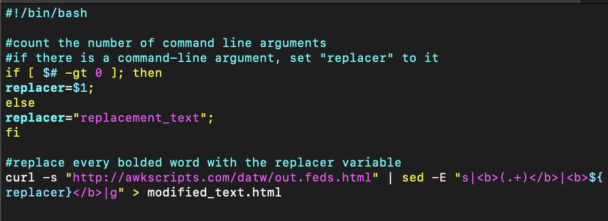
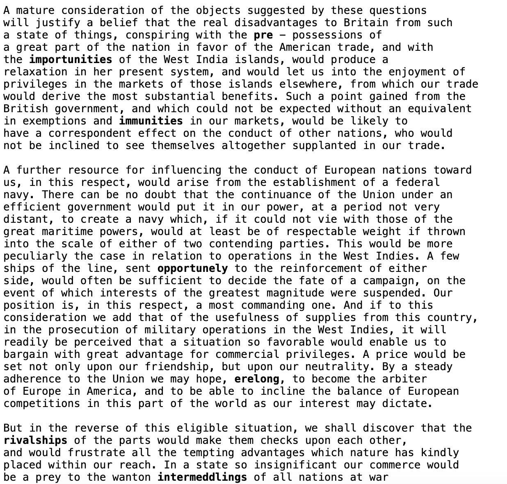
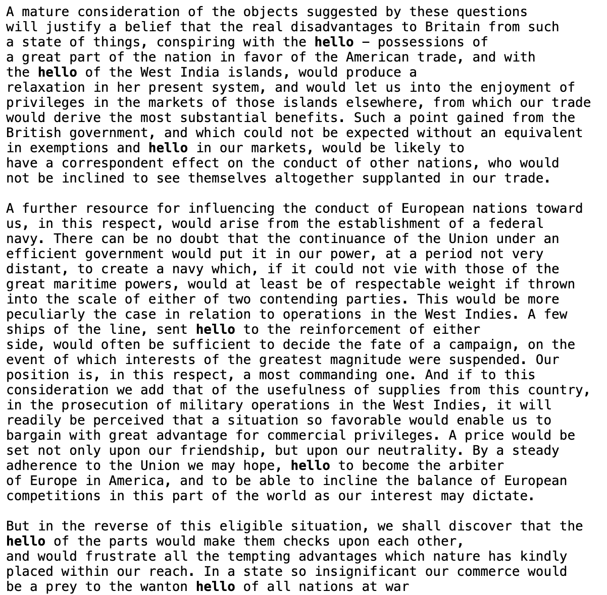
"Proof" From Class
- The calculator project is based on the source code provided in class: original calculator code
- The sketchpad project progressed from just a set-size sketchpad to adding the ability to change sizes, to adding the random color button.
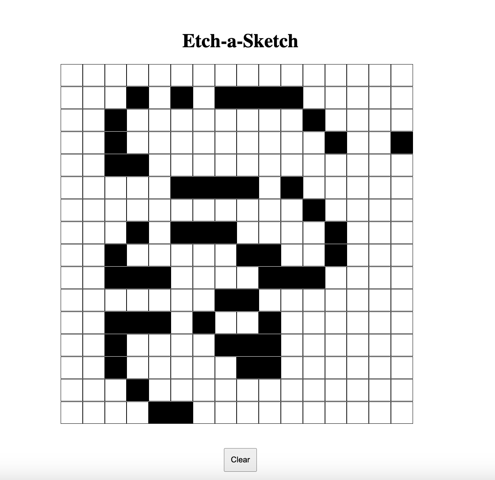
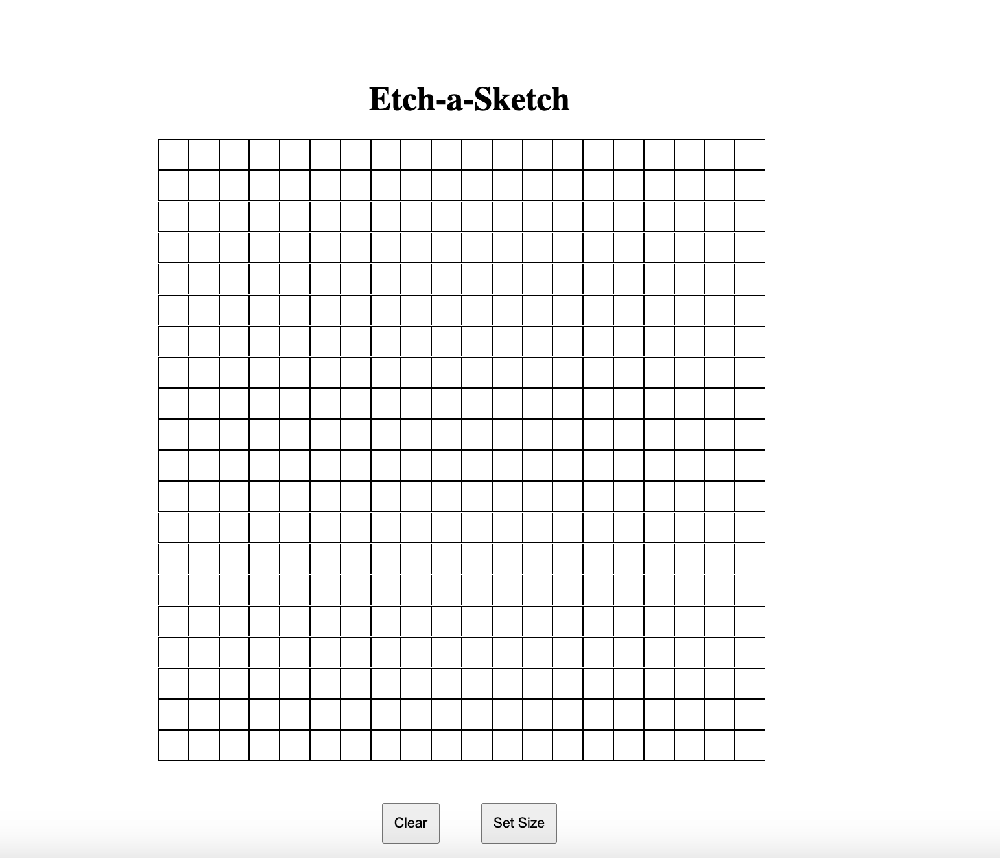

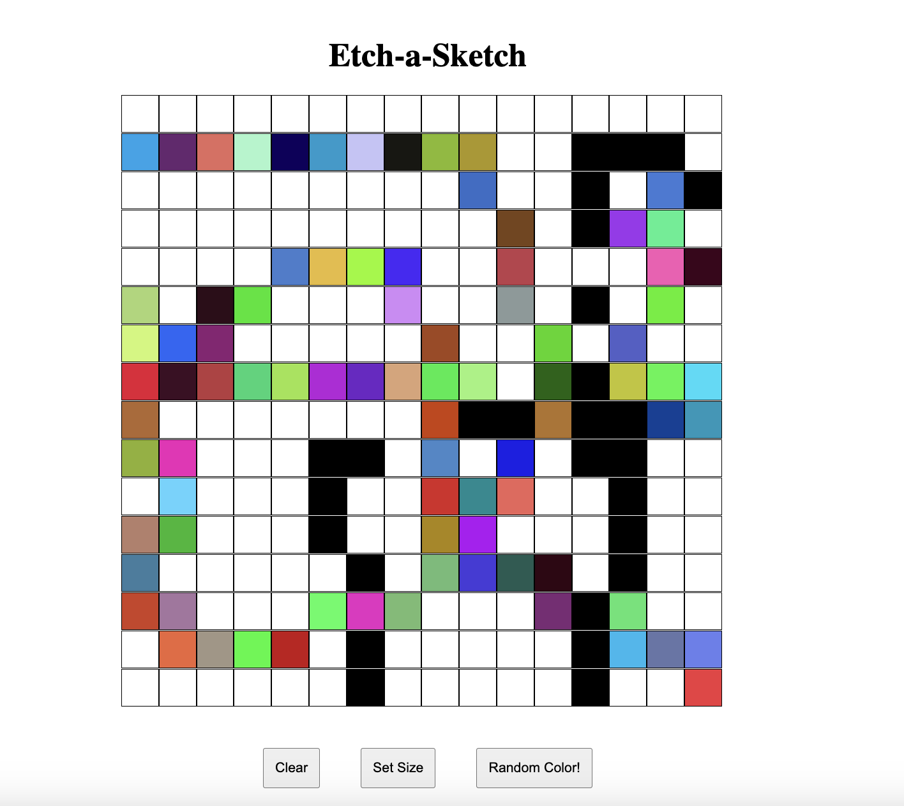
- The awk script uses the allcataccess website. It was inspired by the early TA challenges.
- The sed script uses the awkscripts federalist papers. It was inspired by the early TA challenges.
- The PHP manual project uses the manual site we got in class for Challenge 10, but expands it to use any man7 page manual instead of only the bash one.
ChatGPT helped me figure out the DOM elements/how to print text onto the webpage after parsing it from the manual.
Challenge 10:
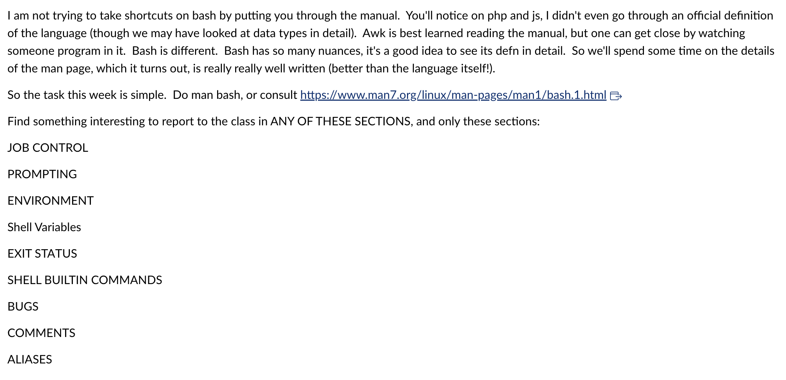
- The PHP GPA calculator was meant to use some of the basic things we learned in challenge 5 (basic form manipulation).
I used GPT to help a bit with taking the information from the form and with fixing the calculateGPA() funxtion, but I did all of the JavaScript by myself.
 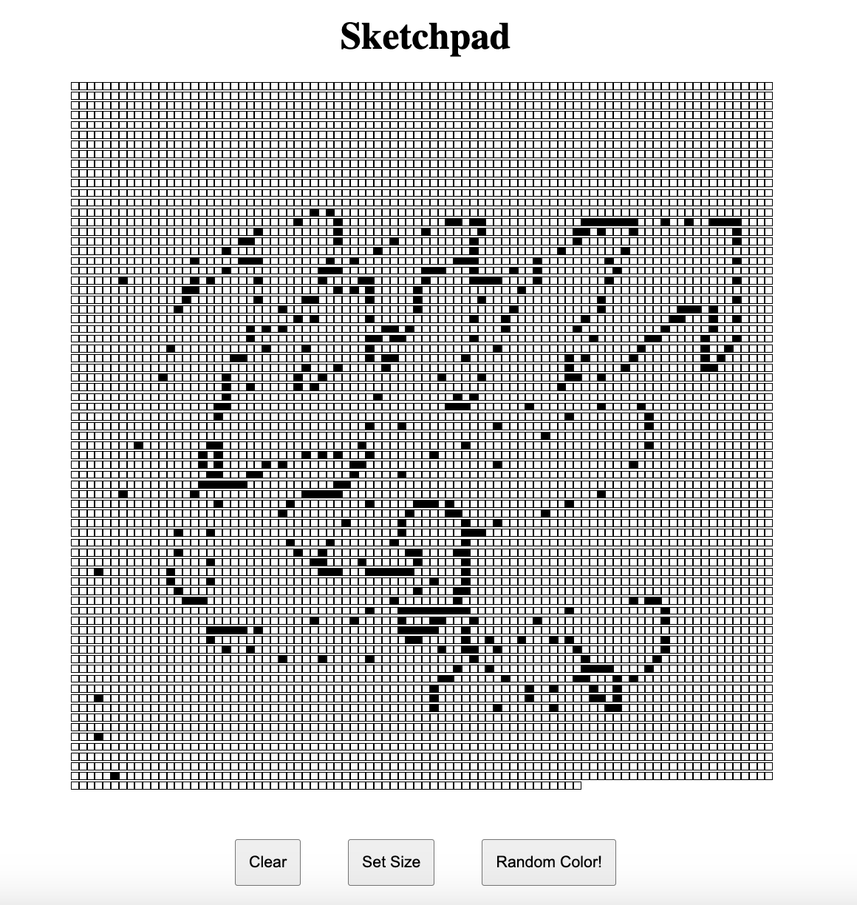
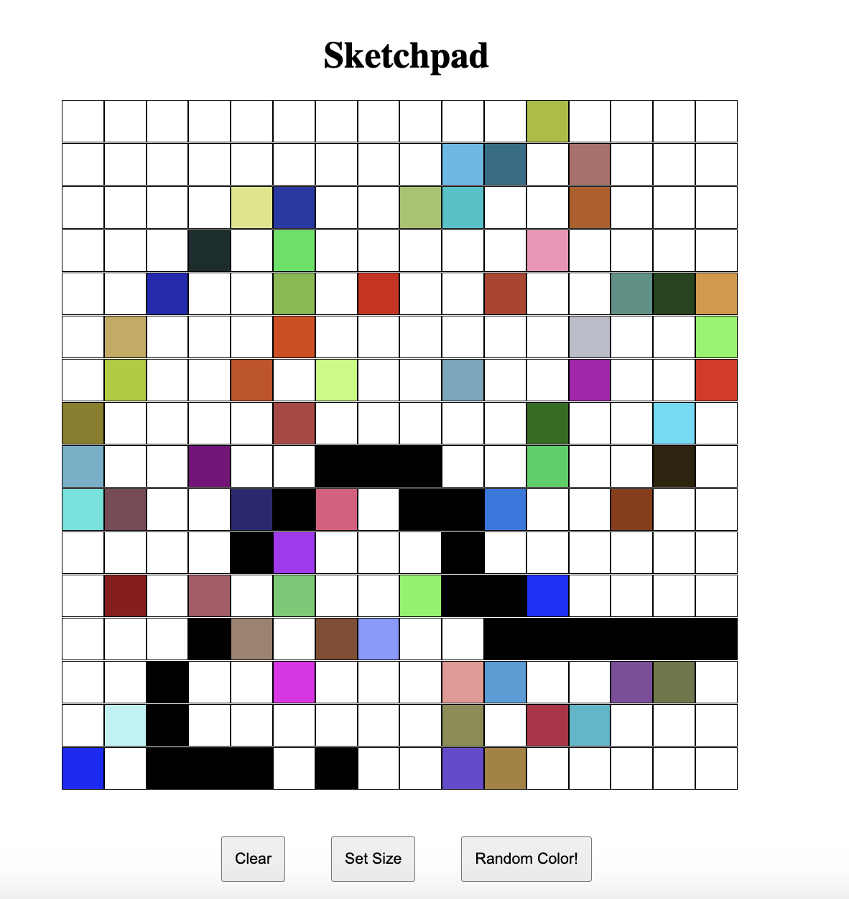
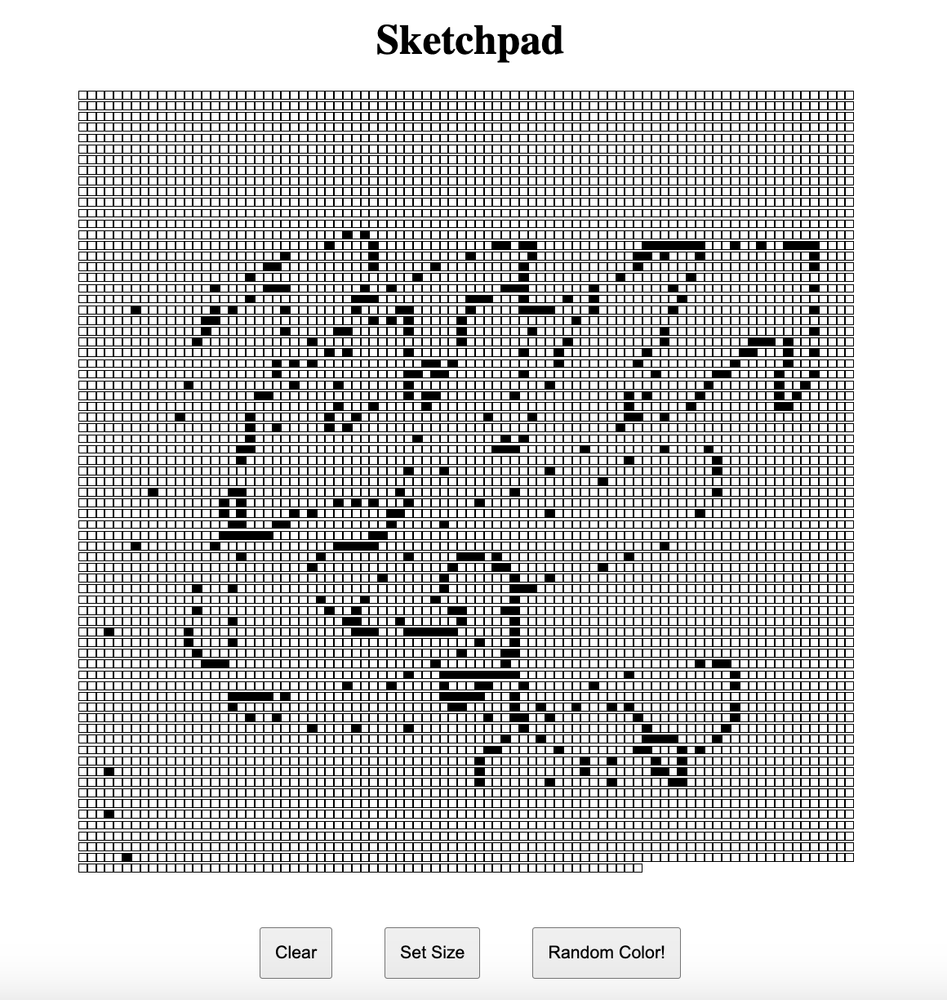
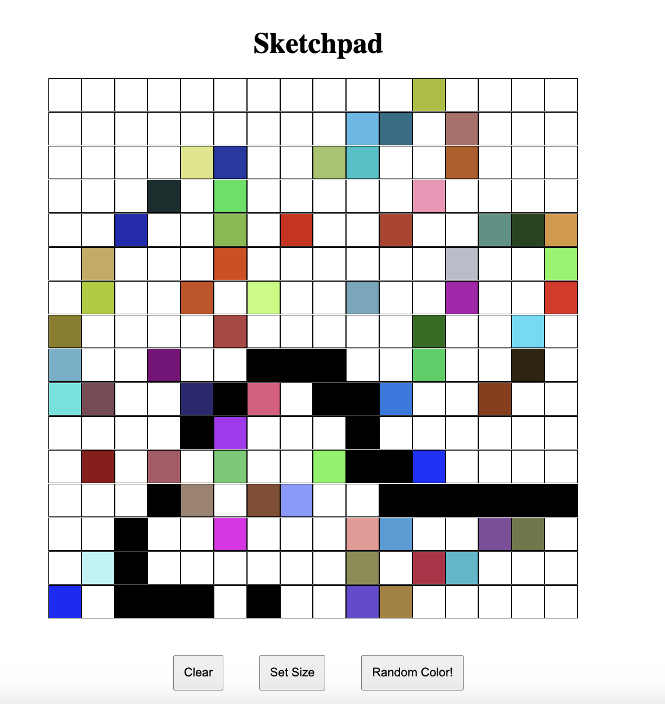